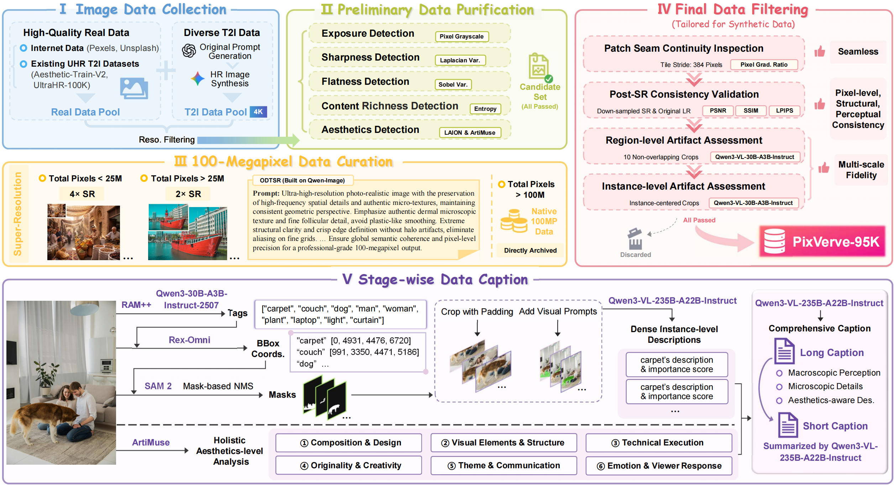
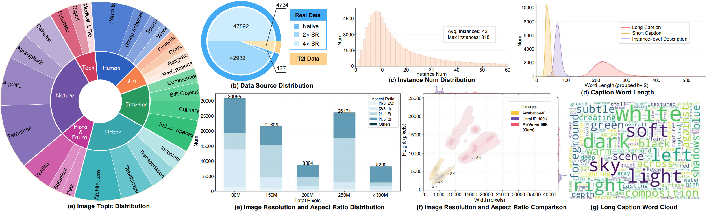

(1) We introduce PixVerve-95K, the first large-scale, high-quality T2I dataset to push image resolution to 100MP. With a five-stage, automated data pipeline, we curate 95,735 100MP images with fine-grained annotations (5 types of metadata and 2 comprehensive captions), directly supporting the training or fine-tuning of T2I models at high resolutions.
(2) Based on our proposed PixVerve-95K, we first explore the attempt of generating 100MP images natively. Specifically, we extend existing T2I foundation models (including both latent diffusion models and pixel diffusion models) with three distinct training schemes, providing valuable insights and paving the way for future breakthroughs.
(3) To address the limitations of conventional T2I benchmarks, we construct PixVerve-Bench, a systematic, hierarchical evaluation protocol incorporating both traditional metrics and assessments based on Multimodal Large Language Models (MLLMs).

Our PixVerve-95K curation pipeline that includes: 1) High-quality and diverse raw image data acquisition. 2) Preliminary data purification comprising five parallel detection procedures. 3) 100MP data curation via super-resolution. 4) Final data filtering to ensure the quality of our synthetic data. 5) Stage-wise data caption pipeline carefully designed for UHR images.

@article{park2021nerfies,
author = {Park, Keunhong and Sinha, Utkarsh and Barron, Jonathan T. and Bouaziz, Sofien and Goldman, Dan B and Seitz, Steven M. and Martin-Brualla, Ricardo},
title = {Nerfies: Deformable Neural Radiance Fields},
journal = {ICCV},
year = {2021},
}